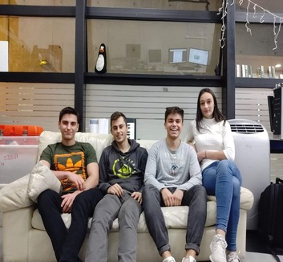

Bios de l'équipe
Nous avons choisit de nous associer de part notre passion commune pour l'informatique. En effet, tous memebre du Club*Nix, nous sommes tous passionné d'informatique et le domaine réseau en particulier. C'est pourquoi nos recherches se sont portées vers la surveillance de masse à travers les réseaux sociaux notement. Voici une breve déscription de chacun des membres de notre équipe :
Guillaume :
J’ai 18 ans j’ai pratiqué pendant plus de 10 ans le judo. J’aime beaucoup regarder des vieux films et des documentaires sur la 1ère et la 2ème guerre mondiale.
Théo :
J'ai 18 ans et j’ai fait de l’escrime pendant plus de 10 ans. J’adore l’informatique et le modélisme, notamment le pilotage de drone.
Laurent :
J’ai passé 17 ans sur Toulouse, j’ai obtenu avec mention un bac S. J’aime beaucoup l’informatique et le sport, j'ai notamment participé en 2015 aux championnats de France d’Aviron.
Manon :
Ayant maintenant 18 ans, j’ai passé 14 ans de ma vie à pratiquer de la danse classique en conservatoire et de la GRS en compétition. Je me suis toujours intéressée au numérique.
Cependant, au cours de l'année, Guillaume à décidé d'abandonner ses études à l'ESIEE Paris, ce qui a eu pour effet d'augmenter la charge de travail des autres membres.